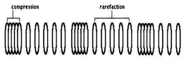

WAVE MOTION: MECHANICAL WAVES
-
Definition
- Wave ~ any disturbance from an equilibrium condition which travels or propagates with time from one region in space to another.
Ex: water waves and sound waves - Mechanical waves - waves wherein the disturbance travel thru a material medium
Ex: sound waves - need a material medium to be transmitted - Electromagnetic waves - waves wherein the disturbance travel through empty space
Ex: radio waves, TV signals, microwaves, X-rays - Matter waves - associated with electrons, protons, and other fundamental particles, and even atoms and molecules
- Types of mechanical waves:
- 1. Transverse waves - the particles vibrate perpendicular to the direction of the waves
Ex: waves traveling thru a stretched string, cord or wire 
- 2. Longitudinal or Compressional Waves - the particles vibrate parallel to the direction of the waves
Ex: waves traveling thru liquids, air, metal bars or rod - 
- * When longitudinal waves travel through a medium, there are alternate compression and rarefaction regions.
- Amplitude (A) - maximum displacement of a particle in the medium
- Wavelength (λ) - distance between two (2) consecutive particles which are of the same phase (i.e. same displacement and same velocity)
- Frequency (f) - number of vibrations made by each particle per second
- Period (T) – time to complete one cycle
- Speed of propagation (V) - the distance traveled by the particle in the medium per second

Classification of Waves
Mechanical Waves
Properties of Waves:
- Wave ~ any disturbance from an equilibrium condition which travels or propagates with time from one region in space to another.
-
Mathematical Representation of Wave
- A wave cannot be analyzed completely unless its mathematical description or equation is used. Just like any other curve, a wave is also expressed by means of an equation. Ordinarily, the equation is a simple sine or cosine function but since it is a traveling wave, consideration is made on the distance it travels thru the medium during a time, t.
- General Equation:
- Where:
- A = amplitude
- ω = 2πf = angular frequency
- k = wave number or propagation number
- y = the displacement of a particle in the medium during a time t which is at a distance x from the source
- (-) ωt = moving in the +x-direction
- (+) ωt = moving in the -x-direction
- ∅ = phase angle
- Stationary or standing waves formed when two component waves (i.e. incident and reflected waves) of similar properties travel in opposite directions though the same medium.

- (a) Five snapshots of a wave traveling to the right, at the times t indicated below part (c) (T is the period of oscillation). (b) Five snapshots of a wave identical to that in (a) but traveling to the left, at the same times t. (c) Corresponding snapshots for the superposition of the two waves on the same string. At t = 0, ½ T, and T, fully constructive interference occurs because of the alignment of peaks with peaks and valleys with valleys. At t = 1/4T and 3/4T, fully destructive interference occurs because of the alignment of peaks with valleys.
- As the waves move through each other, some points never move (nodes) and some move the most (antinodes).
- From the figure, we can derive a wave function for that specific standing wave by adding the wave functions y1(x, t) and y2(x, t):
- Where:
- y1(x,t) = Asin(kx - ωt)
- (incident wave traveling to the right)
- y2(x,t) = Asin(kx+ ωt)
- (reflected wave traveling to the left)
- The principle of superposition gives, for the combined wave (stationary wave):
- ys(x,t) = y1+y2 = Asin(kx - ωt) + Asin(kx + ωt)
- *Review: cos(A±B) = cosAcosB ∓ sinAsinB
- sin(A±B) = sinAcosB ± cosAsinB
- ys(x,t) = A[sin(kx)cos(ωt)-cos(kx)sin(ωt)] + A[sin(kx)cos(ωt)+cos(kx)sin(ωt)]
- ys(x,t) = 2Asin(kx)cos(ωt)
- ys(x,t) = ASWsin(kx)cos(ωt)
- magnitude - gives amplitude at position x
- Asw = amplitude of the standing wave
- • Modes
- Frequencies of waves associated with their wave patterns.
- • Harmonics
- A note of which the vibration rate is a whole number.
- A note whose frequency is a multiple of the fundamental frequency.
- • Overtone
- A term preferred by musicians instead of harmonics.

- Since both ends of the string are fixed in position, the ends must be nodes in the standing waves; we can observe from the figures that the length L of the string must be an integer number of half wavelength.
- For the fundamental frequency:
- For the General Equation:
- But the VELOCITY of wave traveling thru vibrating strings,
- Cords or wires is:
- Where:
- T = tension on the string/cord/wire, Newton
- μ = mass per unit length of the string
- = m/L , kg/m
- μ = linear density
- = ρA
- Where:
- ρ = density of string
- = SG x mass density of water
- A = cross-sectional area of string
- Therefore:
- *For string fixed at both ends, the harmonic number is the same as the number of segments.
- • It will always be a node at clamped end and an antinode at the free end.

- For General Equations:

- The VELOCITY of wave traveling thru metal rods is:
- Young's modulus of elasticity
- Y = stress/strain
- Stress = Force / cross-sectional area = F/A
- Strain = elongation / original length = e/Lo

- • It will always be a node at midpoint and antinode at the ends.
- For General Equation:
-

- Pipes can either be open on both ends or on only one end. The open ends act as free-end reflectors (producing antinodes) and the closed ends act as fixed-end reflectors (producing nodes).
- A. Open Pipe
- For the general equation:

- The VELOCITY of wave traveling thru air is:
- Where: T = temperature in °C
- B. Closed Pipe
- For the General Equation:

STATIONARY (STANDING) WAVES
Modes of Vibration
I. Modes of Vibration of a String Fixed at Both Ends:
II. Modes of Vibration of a Rod Clamped at One End:

where: Y = Young's modulus of elasticity, Pa
ρ = density of rod or bar
III. Modes of Vibration of a Rod Fixed at Midpoint:
IV. Modes of Vibration of an Air Column:
-
Sample Problems
- 1. A sinusoidal wave of wavelength 2 m and amplitude 0.1 m travels on a string with a speed of 1 m/s to the right. At t = 0, the left end of the string is at the origin. For this wave, find (a) the frequency, (b) the angular frequency, (c) the angular wave number, and (d) the wave function in SI units. Determine the equation of motion in SI units for (e) the left end of the string and (f) the point on the string at x = 1.5 m to the right of the left end. (g) What is the maximum speed of any element of the string?
- 2. Transverse waves on a string have wave speed 8m/s, amplitude 0.07m, and wavelength 0.32m. The waves travel in the negative x-direction, and at t = 0 the x = 0 end of the string has its maximum upward displacement. (a) Find the frequency, period, and wave number of these waves. (b) Write a wave function describing the wave. (c) Find the transverse displacement of a particle at x = 0.36m at time t = 0.15s.
- 3. A transverse traveling wave on a taut wire has an amplitude of 0.200 mm and a frequency of 500 Hz. It travels with a speed of 196 m/s. (a) Write an equation in SI units of the form y = A sin (kx - ωt) for this wave. (b) The mass per unit length of this wire is 4.10 g/m. Find the tension in the wire.
- 4. A 2-m-long wire having a mass of 0.1 kg is fixed at both ends. The tension in the wire is maintained at 20 N. (a) What are the frequencies of the first three allowed modes of vibration? (b) If a node is observed at a point 0.400 m from one end, in what mode and with what frequency is it vibrating?
- 5. A pipe open at both ends has a fundamental frequency of 300 Hz when the temperature is 0°C. (a) What is the length of the pipe? (b) What is its third harmonic frequency at a temperature of 30°C?